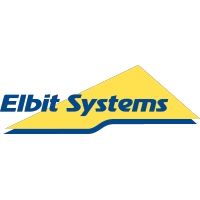

About Me
Experienced Automation Engineer
BIO
Automation engineer with 6 years of experience in developing automation solutions, tools and web applications for testing software and hardware products.
Bachelor of Computer Science at the Technion.
Practical Software Engineer.
Currently work as Automation Engineer at PTC.
Experience
Automation Engineer |
|
PTC | 2021-Present |
|
- Developed automation tools for testing and validating CAD products
- Responsible for Regression DB system supporting hundreds of CAD developers
- Responsible for Automatic Scanning System for scanning PTC products and report vulnerabilities to owners
- Designed and developed automatic infrastructure tool resolving Zabbix problems in Supermicro blade systems
- Innovated and developed internal search engine serving hundreds of PTC users using Elasticsearch
- Experience with Java Spring, Angular, Python, OOP, Jenkins CI/CD, GitLab, Dockes, MongoDB, PostgreSQL, Elasticsearch, Linux, Bash
Automation Developer |
|
Lumenis Ltd | 2019-2020 |
- Planned and developed 5 automation applications for testing 4 healthcare systems
- Improved testing process, achieving 80% reduction in testing time
- Developed automation tools for testing AWS cloud and Server-Client systems
- Experienced with Python, C#, micro-controllers (Arduino, oscilloscopes and Ophir devices)
Automation Developer |
|
Elbit Systems Ltd | 2018-2019 |
 |
- Developed automation infrastructure testing real-time embedded system
- Experience with Python, C# and Jenkins
R&D Software Engineer |
|
Cronus Cyber Technologies | 2017-2018 |
|
- Developed automation tool to collect vulnerabilities and updating database
- Expanded product database to cover more hundreds of CVEs and products
- Experience with Python, Linux Bash, networking, Jenkins, Git